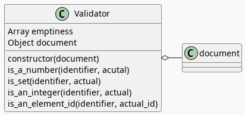

A Validator for SliderSettings
Table of Contents
The Validator

The Validator class checks the type of a given value and throws an Error if it's not correct. It's meant to validate settings, in particular the SliderSettings.
Class Declaration
The constructor takes the document as an argument to make it testable and also to make explicit where it came from. The class also defines an array emptiness to hold the values that I'll use to check if a variable was set.
Setup JSDOM For Testing
This is the document that I'm passing to the Validator for testing.
const VALID_ID = "validator-id";
const document = new JSDOM(`
<html>
<head></head>
<body>
<div id=${VALID_ID}></div>
</body>
</html>
`).window.document;
Test And Implement The Validator Class
Feature: Validator
I don't have a "Given" statement in this part of the post even though I'm implementing the Given javascript here because each of the Scenarios after this re-use the same Given but I thought it made sense to go here since it sort of tests the existence of the Validator.
Given("a Validator", function() {
this.validate = new Validator(document);
});
And here's the class definition that the Given is using.
class Validator {
emptiness = [null, undefined, NaN];
constructor(document) {
this.document = document;
}
These blocks are the pattern that I'm going to follow for most of the rest of the code:
- Feature file fragment.
- Test implementation to match the feature file.
- Code implementation that's being tested.
Is A Number
Our first method checks that a variable holds a number of some kind.
The Scenarios
Scenario: The expected number is a number.
Given a Validator
When is_a_number is given a number
Then nothing happens.
// Given a Validator
When("is_a_number is given a number", function() {
this.validate.is_a_number("good-number", faker.number.float());
this.validate.is_a_number("good-number", 0);
});
Then("nothing happens.", function() {});
This is the case where we get what we wanted.
Note: I added a second check for 0 because I was originally using the falsy check (!(actual)) but it turns out that 0 would be considered false if you do that so I added an explicit check to make sure I wasn't disallowing 0.
Scenario: The expected number isn't a number.
Given a Validator
When an expected number isn't actually a number
Then it throws an Error.
// Given a Validator
When("an expected number isn't actually a number", function() {
this.bad_call = function() {
this.validate.is_a_number("bad-number", faker.lorem.word());
};
});
Then("it throws an Error.", function() {
expect(this.bad_call.bind(this)).to.throw(Error);
});
I'm just checking for a string. I suppose there are other checks to be made, but since the Validator is only intended to validate my own code for mistakes, I don't suppose it really needs to be exhaustive.
Scenario: The expected number wasn't assigned.
Given a Validator
When an expected number isn't assigned
Then it throws an Error.
// Given a Validator
When("an expected number isn't assigned", function() {
this.bad_call = function() {
this.validate.is_a_number("no-number", null);
};
});
// Then it throws an error
This isn't explicitly needed, I think, since it falls within "non-number" but I wrote the tests as I made the SliderSettings and sometimes I would get the parameters out of order (I wish javascript had named variables) so I added null checks for the arguments to make it more obvious.
The Method
And here's the implementation.
is_a_number(identifier, actual) {
if ((!actual && actual !== 0) || isNaN(actual)) {
throw Error(`"${identifier}" must be a number not "${actual}"`);
};
}; // is_a_number
The first condition checks that the number isn't 'falsy', but in javascript 0 is considered falsy so to allow zeros I added the check that it's not 0 if it's falsy. The conditional also checks if it is javascript's idea of a NaN using the global isNaN. This function coerces values to numbers (e.g. the string "120" is not Nan) so I originally used Number.isNaN, since the documentation says that it doesn't coerce values, but that turns out to mean that it just returns false without coercing the string… I suppose there's a reason for this, particularly since NaN is meant for numeric data types, so a string is "not a number" but it can't be NaN, but whatever the reasion, it's something to remember, although it seems odd that, in being more strict, Number.isNaN ends up returning the same value as the global version.
Is Set
This is for the cases where I have no particular type in the mind but a variable does need to be set to something.
Scenarios
Scenario: The variable has a value set.
Given a Validator
When is_set is given a variable that's set
Then nothing happens.
// Given a Validator
When("is_set is given a variable that's set", function() {
this.validate.is_set("set-variable", faker.lorem.word());
this.validate.is_set("set-variable", 0);
this.validate.is_set("set-variable", false);
});
// Then nothing happens.
Given the broad view of what I'm saying is_set should check for it'd be hard to check all the possibilities so this mostly checks that I didn't use a falsy check or something like that which would create false negatives.
Scenario: The variable is empty.
Given a Validator
When is_set is given an empty variable
Then it throws an Error.
// Given a Validator
When("is_set is given an empty variable", function() {
this.bad_call = function() {
this.validate.is_set(null);
};
});
// Then it throws an Error.
Checking for null should be the most common case, since I'm going to use this to validate an object and make sure it's attributes were all set.
Given a Validator
When is_set is given an undefined variable
Then it throws an Error.
// Given a Validator
When("is_set is given an undefined variable", function() {
this.bad_call = function() {
this.validate.is_set(undefined);
};
});
// Then it throws an Error.
I wouldn't think this would be something that needs to be checked, but since javascript just returns undefined instead or raising an error if you misspell a variable name, I guess it's useful.
The Method
This checks if the value is in whatever is in the emptiness array, which as of now has:
nullundefinedNaN
I'm not sure about that last one. I think I was trying to use all the falsy values that weren't likely to be actual values (like 0, false), but now you can't use infinity either. Not that I can think of a case that I would, but maybe that'll have to be taken out later.
is_set(identifier, actual) {
if (this.emptiness.includes(actual)) {
throw Error(`"${identifier} must be set, not "${actual}"`);
};
}; //is_set
Is An Integer
The Scenarios
Scenario: The variable has an integer
Given a Validator
When is_an_integer is given a variable with an integer
Then nothing happens.
// Given a Validator
When("is_an_integer is given a variable with an integer", function() {
this.validate.is_an_integer("is-integer", faker.number.int());
this.validate.is_an_integer("is-integer", 1.0);
});
// Then nothing happens
Our happy-path case. The second check in the When is there to make it clearer that even though 1.0 smells like a float, Number.isInteger treats it like an integer.
Scenario: The variable has a string
Given a Validator
When is_an_integer is given a string
Then it throws an Error.
// Given a Validator
When("is_an_integer is given a string", function() {
this.bad_call = function() {
this.validate.is_an_integer("not-integer", `${faker.number.int()}`);
};
});
// Then it throws an Error.
I think this is the most likely error - it was passed a string. Interestingly, like the Number.isNaN function, the Number.isInteger function that I'm using also doesn't coerce strings so while "5" isn't not NaN, it also isn't an integer.
Scenario: "is_an_integer" is given a float.
Given a Validator
When is_an_integer is given a float
Then it throws an Error.
// Given a Validator
When("is_an_integer is given a float", function() {
this.bad_call = function() {
this.validator.is_an_integer("float-not-integer", 5.5);
};
});
// Then it throws an Error.
Since I showed above that 5.0 is considered an integer I felt obliged to make sure that other floats aren't considered integers.
Scenario: The integer variable wasn't set.
Given a Validator
When an expected integer wasn't set
Then it throws an Error.
// Given a Validator
When("an expected integer wasn't set", function() {
this.bad_call = function() {
this.validate.is_an_integer("no-integer", null);
};
});
// Then it throws an Error.
The Method
This is, oddly, the only built-in that I could find that does type checks (but I didn't look that hard, and I was using DuckDuckGo so I might have found something using a different search engine).
is_an_integer(identifier, actual) {
if (!Number.isInteger(actual)) {
throw Error(`"${identifier}" must be an integer, not ${actual}`);
};
}; // is_an_integer
Is An Element's ID
This is what really started it all. I had some mysterious errors drawing a spiral which turned out to be because I had changed a div ID in the HTML but not in the javascript. So this checks to see if there really an element with the ID. It doesn't check if it's the right ID, but I don't know that there's a simple way to do that anyway.
The Scenarios
Scenario: A valid ID is given.
Given a Validator
When is_an_element_id is given a valid element ID
Then nothing happens.
// Given a Validator
When("is_an_element_id is given a valid element ID", function() {
this.validate.is_an_element_id("good-id", VALID_ID);
});
// Then nothing happens.
Since I'm using JSDOM I needed to use a real ID to check if it was valid, not a random string.
Scenario: An invalid ID is given.
Given a Validator
When is_an_element is given an invalid element ID
Then it throws an Error.
// Given a Validator
When("is_an_element is given an invalid element ID", function() {
this.bad_call = function() {
this.validate.is_an_element_id("bad-id", VALID_ID + "invalid");
};
});
// Then it throws an Error.
Although I suppose the odds of a random string matching my div ID is pretty low, I thought that mangling the ID would be a better guaranty that it won't match than using faker to generate a string.
The Method
This relies on the built-in document.getElementById method (well, built-in when there's a browser).
is_an_element_id(identifier, actual) {
if (this.document.getElementById(actual) === null) {
throw Error(`"${identifier}" isn't a valid ID - "${actual}"`);
};
}; // is_an_id
Links
Related Posts
Javascript
- Document: getElementById() method - Web APIs | MDN [Internet]. 2023 [cited 2023 Oct 3]. Available from: https://developer.mozilla.org/en-US/docs/Web/API/Document/getElementById
- isNaN() - JavaScript | MDN [Internet]. 2023 [cited 2023 Oct 3]. Available from: https://developer.mozilla.org/en-US/docs/Web/JavaScript/Reference/Global_Objects/isNaN
- NaN - JavaScript | MDN [Internet]. 2023 [cited 2023 Oct 3]. Available from: https://developer.mozilla.org/en-US/docs/Web/JavaScript/Reference/Global_Objects/NaN
- NaN. In: Wikipedia [Internet]. 2023 [cited 2023 Oct 3]. Available from: https://en.wikipedia.org/w/index.php?title=NaN&oldid=1175348130
- Number.isNaN() - JavaScript | MDN [Internet]. 2023 [cited 2023 Oct 3]. Available from: https://developer.mozilla.org/en-US/docs/Web/JavaScript/Reference/Global_Objects/Number/isNaN
- Number.isInteger() - JavaScript | MDN [Internet]. 2023 [cited 2023 Oct 3]. Available from: https://developer.mozilla.org/en-US/docs/Web/JavaScript/Reference/Global_Objects/Number/isInteger